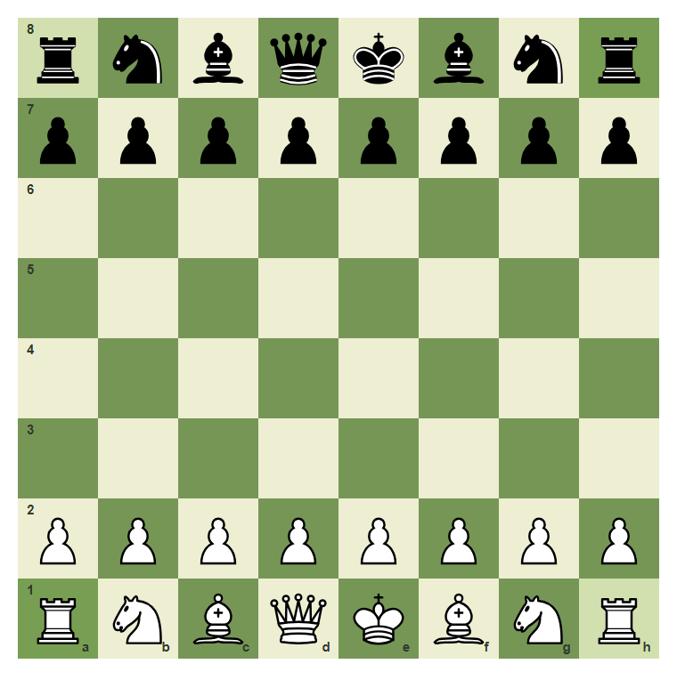
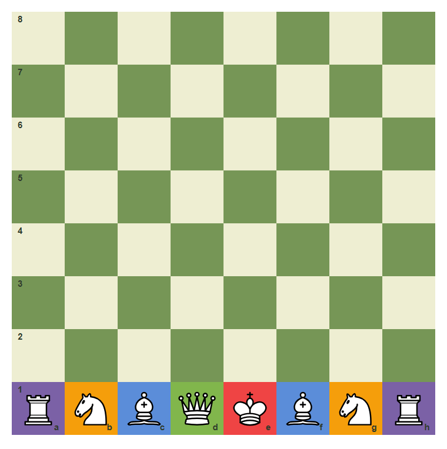
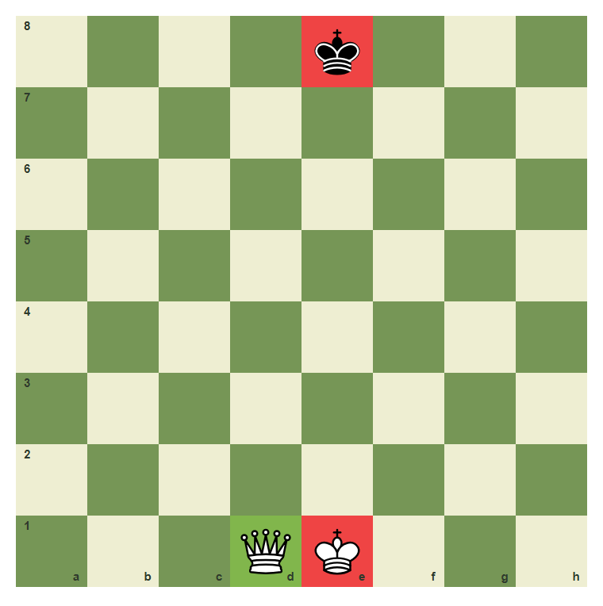
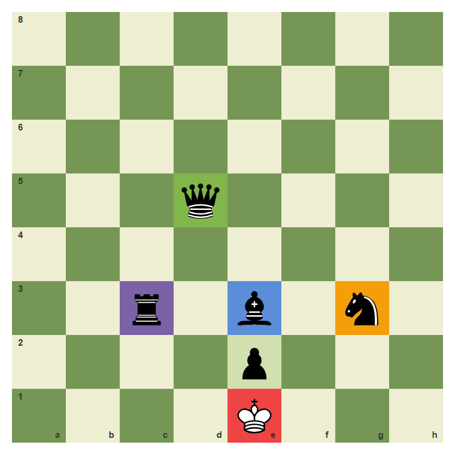
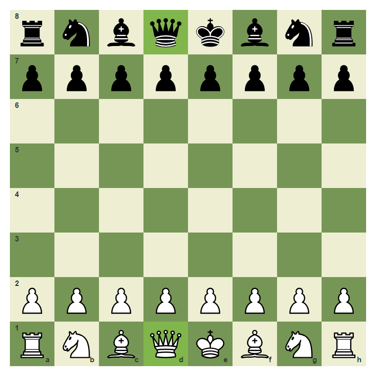
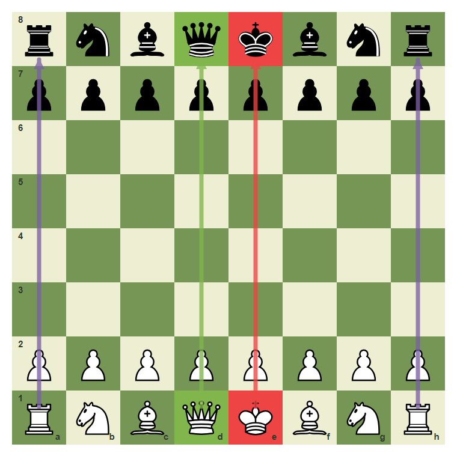
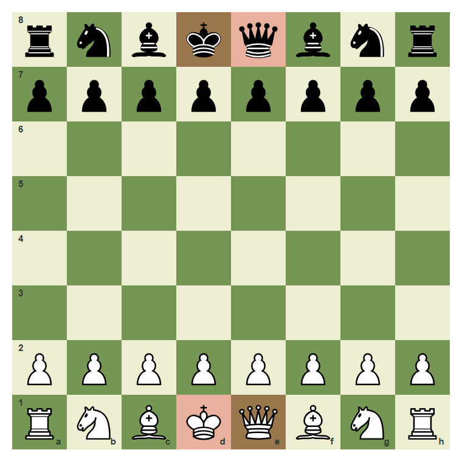
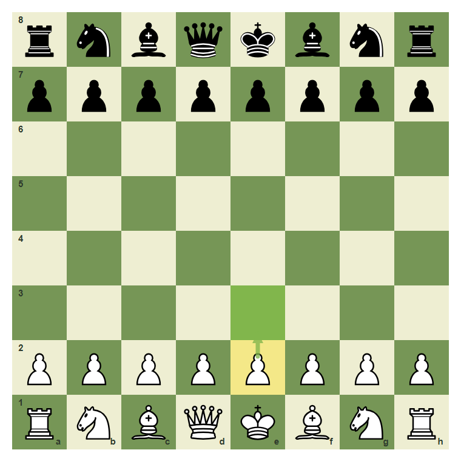
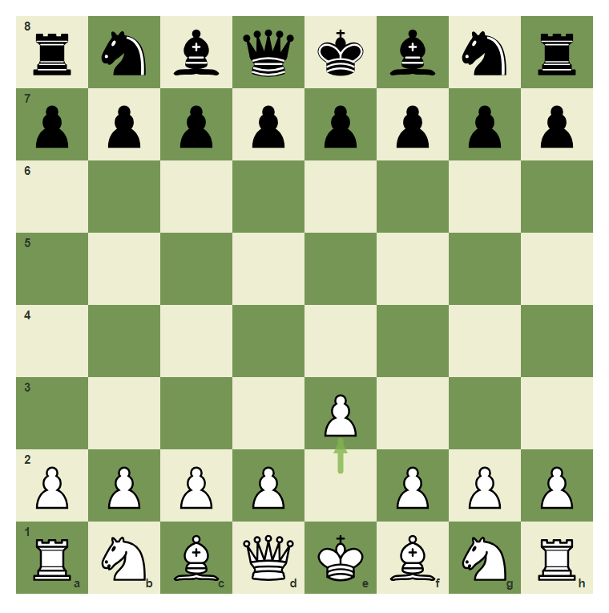

Pieces, Values, And Setup
The board is a map; now learn the army that lives on it.
- Name all six chess pieces.
- Set up White and Black correctly from the starting position.
- Use the queen-on-own-color rule.
- Remember simple material values without pricing the king.
- Identify and move White's e-pawn from the starting position.
The Two Armies
Chess begins with two equal armies. White starts on the 1st and 2nd ranks. Black starts on the 8th and 7th ranks.
Each side has one king, one queen, two rooks, two bishops, two knights, and eight pawns.
The starting position

This is the complete starting position: White pieces on ranks 1 and 2, Black pieces on ranks 8 and 7.
White's back rank

From a1 to h1: rook, knight, bishop, queen, king, bishop, knight, rook.
Piece Names And Simple Values
The king is the most important piece because losing the king means losing the game. Do not give the king a point value.
For simple counting, use this first material scale: queen 9, rook 5, bishop 3, knight 3, pawn 1. These numbers are not the whole story, but they help you notice when a trade is obviously good or bad.
The royal pieces

The kings are on e1 and e8 in a normal setup. White's queen begins on d1.
A first material scale

Queen on d5 is 9, rook on c3 is 5, bishop on e3 is 3, knight on g3 is 3, pawn on e2 is 1, and king on e1 is priceless.
The Setup Rules That Prevent Mistakes
The fastest setup check is the queen rule: queen on her own color. The White queen starts on the light square d1. The Black queen starts on the dark square d8.
After the queen and king are correct, the bishops stand beside them, the knights stand beside the bishops, and the rooks go in the corners.
Queen on her own color

White queen on d1, Black queen on d8. Queen on her own color fixes the center of the back rank.
The armies mirror each other

White and Black mirror each other: queens face queens on the d-file, kings face kings on the e-file, and rooks sit in the corners.
Common mistake: swapping king and queen
This setup looks close, but both queens and kings are swapped. White's queen has been put on e1 instead of d1. Black's queen has been put on e8 instead of d8.
Fix it by returning each queen to her own color.

The wrong setup places White queen on e1 and Black queen on e8. Both queens should be on the d-file.
Identify A Piece, Then Move It
When you know the setup, you can name a piece by its square. The piece on e2 at the start is White's e-pawn.
In the next board, move only that pawn one square forward to e3. The goal is not speed; the goal is matching the piece name, square name, and move.
Find White's e-pawn

The e-pawn starts on e2. The arrow shows e2 to e3.
Move the e-pawn to e3
Move White's e-pawn from e2 to e3.
After e2 to e3

After e2e3, the pawn leaves e2 and stands on e3.
Quick check: what moved?
In the move e2e3, which piece moved?
Chapter Checkpoint
Where does White's queen start?
In the correct starting setup, White's queen begins on:
Which piece is priceless?
Which piece should not be assigned a normal material point value?
What are the corner pieces?
At the start of the game, the pieces in the four corners are: